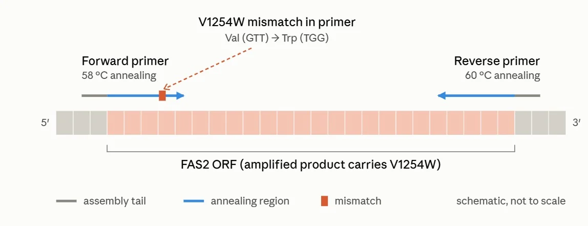
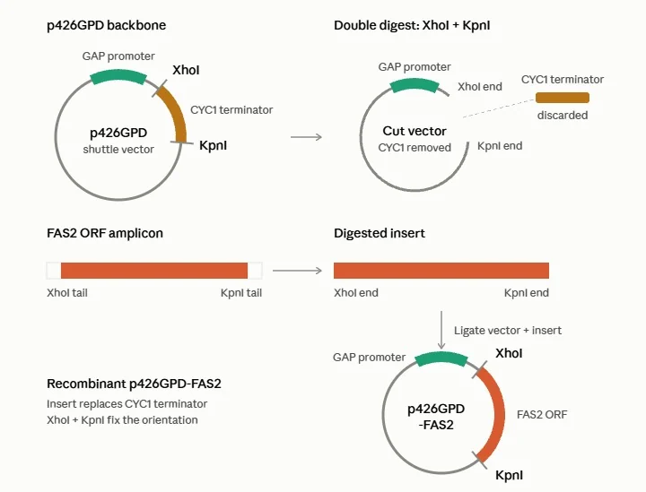
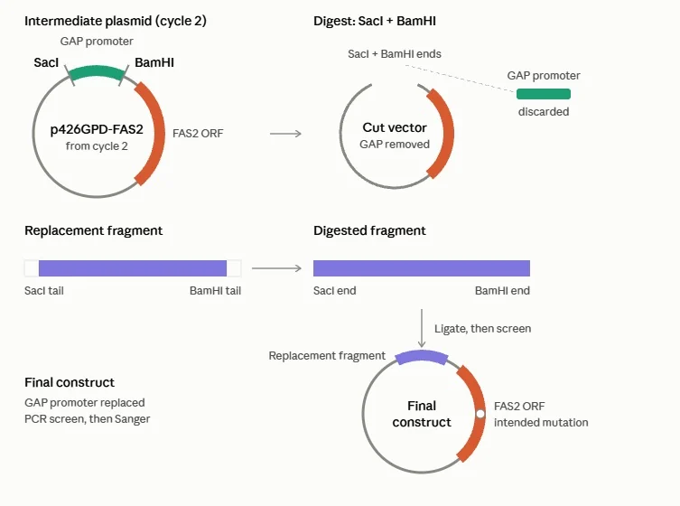

Abstract
Data centres now consume as much electricity as some mid-sized countries, and a growing share of that power goes not to computation but to cooling. Immersion cooling, submerging servers directly in a non-conductive fluid, is one of the most promising ways to cut both that energy load and the water that conventional cooling consumes. But the fluids used today are largely synthetic hydrocarbons or fluorocarbons: non-biodegradable, sometimes PFAS-based, and entirely dependent on petrochemical supply chains. Fatty acid esters solve the environmental half of that problem, yet they are still made from palm oil and petroleum-derived inputs.
We are engineering Saccharomyces cerevisiae to biosynthesise methyl myristate, a biodegradable C14 ester with the thermal and dielectric properties an immersion coolant needs. A single point mutation in the fatty acid synthase ketoacyl synthase domain (FAS2 V1254W) caps chain elongation at C14, and a heterologous methyltransferase converts the product to its methyl ester inside the cell. The result is a coolant whose carbon comes from sugar rather than from crude oil or palm plantations.
1. The Data-Centre Cooling Problem
Every prompt typed, video streamed, and cloud file saved somewhere draws down a glass of water you will never see. Data centres are the invisible plumbing of the digital age, and as AI workloads explode, that plumbing is drawing harder than ever, with global water demand from AI projected to reach 4.2 to 6.6 billion cubic metres a year by 2027, which is 1.1 to 1.7 trillion gallons, and more than the total annual water withdrawal of Denmark four to six times over (Li et al., Communications of the ACM, 2025).
Cooling sits at the centre of this. It is not a side cost of running a data centre; in many facilities it is the single largest non-computational energy draw. And the dominant cooling architecture, the evaporative cooling tower, pays for its water efficiency: fresh water absorbs heat from the server racks and is then cooled by evaporating into the air, consuming that water outright rather than recirculating it.
India is now one of the fastest-growing taps in that system. In just a few years the country has gone from a minor destination to one of the world's fastest-growing data centre markets. Installed IT capacity crossed 1.8 GW in the first half of 2026 and is projected to pass 6.7 GW by 2030, against more than US$300 billion in announced investment commitments (Anarock Capital, 2026). The build is concentrated in a handful of cities: Mumbai and the wider MMR region holds 812 MW across 54 facilities, followed by Chennai at 298 MW, Hyderabad at 178 MW and Bengaluru at 137 MW.
So what happens when that growth collides with where the water actually is? Here is the irony: the very cities driving India's data centre boom are the same ones running out of water. Mumbai, Chennai, Hyderabad and Bengaluru, the metros pulling in tens of billions of dollars in new campus investment, are also exactly where an S&P Global study expects the squeeze to hit hardest, with 60 to 80% of India's data centres facing high water stress within this decade. Chennai has already lived through a preview: its main reservoirs nearly ran dry during the 2019 "Day Zero" crisis.
2. Why Immersion Cooling?
Immersion cooling submerges server hardware in a thermally conductive, electrically insulating fluid, transferring heat directly from chips to liquid without intermediate heat sinks or moving air.
- Higher heat capacity: Liquids have roughly three orders of magnitude greater volumetric heat capacity than air, removing the same heat with less fluid volume and flow.
- Lower cooling power: Eliminating most server fans and air handlers reduces facility energy consumption, improving PUE.
- Reduced water use: Liquid-to-liquid heat exchangers enable dry heat rejection without evaporation, minimising water consumption in water-stressed Indian metros.
- High-density cooling: Direct liquid contact maintains manageable chip temperatures at power densities beyond conventional air-cooling capabilities.
Our project targets single-phase, open-bath immersion, where the fluid remains liquid, absorbs heat by sensible heating, and is circulated through an external heat exchanger. Unlike two-phase systems, which rely on boiling and condensation, single-phase cooling depends directly on the fluid's thermal and dielectric properties.
This makes the cooling fluid the critical component that determines system performance and not the hardware.
3. What Does the Ideal Coolant Need to Do?
A coolant for immersion cooling cannot optimise for just one property. It must be electrically safe, thermally stable, easy to pump, and environmentally responsible, all at once. The Open Compute Project (OCP) publishes the reference targets for single-phase immersion, and every candidate fluid in this project, including ours, is screened against them.
The BIFROST Design Matrix
| Insulate live parts without degrading high-speed signals | Stay liquid and stable at operating temperature | Circulate through dense hardware on minimal pumping energy | Fire-safe across the temperature range, with no lasting footprint |
| Dielectric strength >6 kV/mm | Boiling point >150°C | Viscosity @ 25°C <15 mPa·s | Flash point >150°C |
| Dielectric constant ≤2.3 | Vapour pressure @ 25°C <0.8 kPa | Density <2000 kg/m³ | Pour point <−30°C |
| Loss tangent ≤0.05 | Service life ≥10 years | Ozone depletion 0 | |
| Volume resistivity >10¹¹ Ω·cm |
4. Why Are Current Coolants Not Enough?
Three fluid families dominate the market today, each with a key limitation.
Mineral oils and synthetic hydrocarbons. Widely used with good dielectric performance, but petroleum-derived, poorly biodegradable, and highly viscous. At 25°C, typical mineral oil has a viscosity of 30–50 cSt, around 35–55× that of water. This limits flow through heatsink fins and therefore restricts heat-transfer area. Long-term oxidation is another concern, while their sustainability remains tied to fossil resources.
Fluorocarbons and fluorinated fluids. Excellent dielectric properties, widely used in two-phase immersion cooling. However, many are PFAS, which are highly persistent and increasingly restricted. Their high global warming potential and growing regulatory pressure make long-term use uncertain.
Fatty acid esters. A promising balance of thermal, dielectric, and biodegradable properties. The catch is how they are made: conventional esters often rely on palm oil and fossil-derived alcohols. Palm oil can carry deforestation and land-use impacts, while methanol used in transesterification is largely produced from natural gas or coal. Synthetic esters use petrochemical alcohols such as neopentyl glycol and trimethylolpropane.
This means a "bio-derived" coolant can still depend on agricultural and fossil extractive supply chains, exposing production to volatile prices and geopolitical supply disruptions, a poor foundation for a truly sustainable, resilient coolant.
So, what should the coolant be made of?
After looking at existing immersion fluids, we asked a different question: can we make the coolant using a cell host instead of extracting it from palm oil or petroleum? And more importantly, how should it be made?
This is where BIFROST comes in.


BIFROST engineers a yeast cell to produce methyl myristate (C14), a biodegradable ester designed for high-density immersion cooling.
Why C14?
Chain length is the main knob controlling ester coolant properties, and the trade-off is sharp. Every property below moves monotonically with chain length, in opposite directions.
| Methyl ester | Melting point (°C) | Boiling point (°C) | Thermal cond. (W/m·K) | Viscosity @ 40°C (cP) | Flash point (°C) |
|---|---|---|---|---|---|
| Caprylate C8 | −40 | 193 | ~0.14–0.17 | 1.04 | 94 |
| Caprate C10 | −18 | 224 | ~0.14–0.17 | 1.48 | 119 |
| Laurate C12 | 4–5 | 262 | ~0.14–0.17 | 2.08 | 136 |
| Myristate C14 | 18–19 | 295 | ~0.14–0.17 | 2.84 | 157 |
| Palmitate C16 | 32–35 | ~330 | ~0.14–0.17 | 3.76 | 158 |
| Stearate C18 | 37–41 | ~370 | ~0.14–0.17 | 4.99 | 159 |
Green = suitable for an open-bath data-hall coolant; red = not suitable; amber = provisional. Our target is to come as close as possible to the design matrix above. Thermal conductivity is left uncoloured because it barely moves with chain length; it is the one property that cannot be used to choose between these esters.
C14 is the balance point
It is the longest saturated methyl ester that remains liquid at or near typical operating ambient, melting at 18 to 19 °C against 32 to 35 °C for methyl palmitate and 37 to 41 °C for methyl stearate, while retaining the high boiling point, low volatility and oxidative stability that longer saturated chains provide. It is also the shortest chain whose flash point clears the 150 °C design target, at 157 °C against 136 °C for methyl laurate. It gets those properties without needing the double bonds that give unsaturated esters their low melting points at the cost of oxidative stability.
This is precisely why our engineering target is chain-length control, not simply "more lipid." Yeast already makes fatty acids in bulk. It makes the wrong ones.
How yeast builds fatty acids
Natural fatty acid synthesis
Fatty acid synthesis in S. cerevisiae is an iterative, two-carbon-at-a-time process.

- Priming. Acetyl-CoA is carboxylated by acetyl-CoA carboxylase (ACC1) to malonyl-CoA. This is the committed and rate-limiting step, and the malonyl-CoA it produces is the extender unit for every subsequent round.
- Elongation cycle. The growing acyl chain, tethered to the acyl carrier protein (ACP) domain, is extended by one malonyl unit per cycle through four reactions: condensation (ketoacyl synthase), reduction (ketoacyl reductase), dehydration (dehydratase), and a second reduction (enoyl reductase). Each pass adds two carbons.
- Termination. When elongation stops, the malonyl/palmitoyl transferase (MPT) domain transfers the finished chain off ACP onto coenzyme A, releasing acyl-CoA.
Termination is not timed; it is spatial. The chain is released when it no longer fits comfortably in the enzyme that would extend it further. In wild-type yeast that happens at C16 and C18, which is why palmitoyl-CoA and stearoyl-CoA are the dominant products and C14 myristoyl-CoA is only a minor side product. If termination is set by fit, then changing the fit changes the product.
Fatty acid synthase and FAS2

Yeast uses a type I fatty acid synthase: all catalytic activities are fused into a small number of large polypeptides that assemble into a single megacomplex. The yeast FAS is a 2.6 MDa α6β6 barrel built from two genes:
- FAS1 encodes the β subunit: acetyl transferase, enoyl reductase, dehydratase, and malonyl/palmitoyl transferase.
- FAS2 encodes the α subunit: acyl carrier protein, ketoacyl reductase, ketoacyl synthase, and phosphopantetheinyl transferase.
The reaction chamber is enclosed. The ACP domain swings the growing chain between catalytic centres inside the barrel, and the product only leaves once MPT releases it. In a type II system such as E. coli, chain length is governed by the interplay of three distinct condensing enzymes plus downstream thioesterases, so retargeting means engineering several components at once. In the type I complex, the chain-length decision is concentrated in a single domain on a single gene: the ketoacyl synthase.
The KS domain and chain-length control
The KS domain accepts the growing acyl chain onto a catalytic cysteine, then condenses it with malonyl-ACP to extend it by two carbons. To do this, it must first accommodate the entire existing chain in a hydrophobic acyl-binding tunnel adjacent to the active site. The depth and volume of that tunnel act as a molecular ruler. Once the chain becomes too long for the pocket, binding is strained, condensation slows, and the competing MPT-mediated transfer to CoA wins out. Shrink the pocket and the product gets shorter.
From C14 fatty acid to methyl myristate
Redirecting FAS gets us to a C14 acyl-CoA and, after hydrolysis, free myristic acid. That is not yet a coolant. The ester bond still has to be formed. The conventional route, chemical transesterification, reintroduces a fossil-derived reagent and a downstream chemical step, which is exactly the dependency we set out to remove.
Instead, we form the ester inside the cell using DmJHAMT, the juvenile hormone acid O-methyltransferase from Drosophila melanogaster. It takes S-adenosyl methionine (SAM), an abundant native metabolite, as the methyl donor and transfers the methyl group onto the carboxylate of the fatty acid.

Because this route draws on the cell's own SAM pool, methyl donor supply is a plausible bottleneck at high flux. Our contingency is co-overexpression of SAM2 to regenerate SAM if titre data indicate the methylation step is limiting.
Our engineering: FAS2 V1254W
Our core wetlab intervention is a single-point mutation in the FAS2 ketoacyl synthase domain: valine 1254 to tryptophan.

The rationale. Valine is small; tryptophan is the bulkiest proteinogenic residue. Substituting one for the other at a position lining the acyl-binding tunnel reduces the accessible tunnel volume without touching the catalytic triad. Chains that would previously have been accommodated at C16 are now sterically disfavoured, so release happens one cycle earlier and output shifts toward C14.
How did we achieve the mutation?
To introduce the mutation, we used p426GPD as a shuttle vector and introduced the required DNA inserts sequentially.
Designing the mutation
A PCR-based mutagenesis strategy was used to generate the DNA fragments required for the mutation. Two inserts were designed: the first contained the modified FAS2 open reading frame (ORF) carrying the V1254W mutation, while the second contained the 3′ flanking region required for the intended construct. Primers were designed to amplify the corresponding regions and introduce the required sequences for assembly.

GTCACTCGAGCTGGTATGGGTGGTTGGTCTGCCTTACGGTCAGGTACCGACAACAACCACGGGAGGAATAAASequential restriction digestion and cloning
Step 1: insertion of the mutated FAS2 ORF
The p426GPD shuttle vector was used as the backbone. The vector was digested using the selected restriction enzyme sites to facilitate insertion of the mutated FAS2 ORF. The first insert was ligated into the vector, generating an intermediate recombinant plasmid.

Step 2: insertion of the 3′ flanking region
The intermediate plasmid was subsequently subjected to restriction digestion to enable insertion of the 3′ flanking region. This second insert was introduced into the construct, completing the sequential assembly of the required DNA fragments.

Final recombinant construct
The final plasmid contained the FAS2 ORF carrying the V1254W mutation and the 3′ flanking region within the p426GPD backbone. This construct was prepared for downstream transformation and evaluation of the mutation.
Yeast transformation
The final recombinant construct was introduced into Saccharomyces cerevisiae through yeast transformation. The objective was to enable the engineered DNA construct to undergo homologous recombination with the native FAS2 locus, allowing incorporation of the V1254W mutation into the KS domain.
Screening of transformants
Following transformation, the yeast cells were screened on SD-URA selective medium. The p426GPD shuttle vector carries the URA3 selectable marker, allowing selection of transformants that had acquired the plasmid. Colonies growing on SD-URA medium were selected for further screening.
Growth on selective medium indicated successful acquisition of the URA3 marker but did not, by itself, confirm the intended genomic mutation. Further validation was required to verify the incorporation of V1254W at the FAS2 locus.

| Step | Intervention | Purpose |
|---|---|---|
| Precursor supply | Native central metabolism | Provides acetyl-CoA and malonyl-CoA |
| Chain-length control | FAS2 V1254W point mutation | Narrows the KS acyl tunnel, shifting release from C16/C18 to C14 |
| Esterification | DmJHAMT heterologous expression | SAM-dependent methylation of myristic acid, avoiding chemical transesterification |
| Methyl donor supply | SAM2 co-overexpression (contingency) | Regenerates SAM if methylation becomes flux-limiting |
| Recovery | Extraction from biomass | Yields the finished ester for formulation |
Downstream, the product is characterised by FAME derivatisation followed by GC and GC-MS to confirm identity and quantify the C14 shift against wild-type, and the resulting fluid is evaluated against the coolant criteria of Section 3 using our physics-based thermal model.
The output is a dielectric coolant with the thermal properties data centres need, the biodegradability the environment needs, and a supply chain that begins in a fermenter rather than an oil well.
The fundamental questions
Q1. Why this residue?
The equivalent bulkiness substitution was experimentally validated in Yarrowia lipolytica, shifting production toward myristate. Rather than assume positional equivalence, we aligned the Y. lipolytica and S. cerevisiae FAS2 KS domains to identify the corresponding residue in our chassis: V1254. We introduced the same increase in side-chain bulk at this position.
Structural validation. We modelled the mutant KS domain against the experimental yeast FAS structure (PDB 8PRW), confirming that the tryptophan should occlude the acyl tunnel without disrupting the fold or active site.
Construction. The mutated FAS2 ORF + 3′ homology flank were assembled into p426GPD by directional restriction cloning, producing an ~8,440 bp plasmid carrying URA3 for yeast selection and AmpR for bacterial propagation. Junctions were Sanger-verified, and the construct was linearised before S. cerevisiae transformation.
Q2. Why synthetic biology?
The obvious objection is that methyl myristate can already be made chemically. Our answer is that the chemical route cannot deliver the thing that actually matters here, which is specificity of origin and of chain length.
- Chemical synthesis inherits its feedstock's composition. Transesterifying palm or coconut oil yields a mixture of chain lengths, and isolating C14 requires energy-intensive fractional distillation. A cell engineered for C14 makes the target chain length preferentially, so purification is separation from biomass rather than from near-identical homologues.
- It decouples the product from land use. Palm-derived esters carry a deforestation footprint. A fermentation route runs on sugar, and in principle on agricultural or industrial waste streams, without competing for tropical cropland.
- It decouples the product from petrochemical supply. The methanol in conventional transesterification is fossil-derived. Our SAM-dependent methylation uses a metabolite the cell already makes.
- It is locally producible. Fermentation infrastructure is geographically flexible in a way that petrochemical refining is not, which matters directly for a country building data centres faster than it is building chemical supply chains.
Enzymes are the only catalysts that reliably distinguish a C14 chain from a C16 one. That selectivity is the entire project.
Q3. Why S. cerevisiae?
Our engineering target shaped the choice of chassis. We needed an organism that could efficiently make fatty acids, be genetically engineered at the C14 bottleneck, and scale beyond the lab.
- A tractable FAS system: a type I fatty acid synthase concentrates chain-length control in a specific domain, making targeted engineering of C14 production feasible.
- Native fatty-acid flux: the cell already directs substantial metabolic flux toward fatty-acid synthesis, so we redirect an existing pathway rather than build one from scratch.
- Well-characterised genetics: established vectors, promoters, markers and LiAc/PEG transformation make it straightforward to engineer. Its experimentally solved FAS structure also enables structure-guided mutations.
- Industrial robustness: yeast fermentation is already used at large scale. Its tolerance to low pH and ethanol also helps limit bacterial contamination.
- GRAS status: an established safety profile supports simpler biosafety, containment and future regulatory considerations.
- Eukaryotic machinery: as a eukaryote, it can express heterologous eukaryotic enzymes such as DmJHAMT.
References
Sources cited in the sections above.
Data centres, water and cooling
- Li, P., Yang, J., Islam, M. A. & Ren, S. (2025). Making AI Less “Thirsty”: Uncovering and Addressing the Secret Water Footprint of AI Models. Communications of the ACM. Preprint: arXiv:2304.03271.
- Anarock Capital (2026). Data Centre: The Blueprint of the Digital Fortress in India. Anarock Capital, India.
- Open Compute Project Foundation. OCP Immersion Requirements Document (Immersion Cooling Requirements, Rev. 2.0). Open Compute Project.
- S&P Global Sustainable1. Insight Report: water-stress evaluation for Indian data centres.
- Down To Earth. Analysis of the 2019 Chennai “Day Zero” water crisis.
- European Chemicals Agency (ECHA). PFAS restriction proposal and guidance.
Coolant properties
- Barabás, I. & Todoruț, I.-A. (2011). Biodiesel Quality, Standards and Properties. In: G. Montero & M. Stoytcheva (Eds.), Biodiesel: Quality, Emissions and By-Products, Ch. 1, pp. 3–28. InTech, Rijeka. DOI: 10.5772/25370. (Table 14: density and viscosity of fatty acid esters.)
- Fan, X. et al. (2018). Thermal conductivity measurements in fatty acid methyl esters. Journal of Chemical Thermodynamics.
- Knothe, G. & Steidley, K. R. (2005). Kinematic viscosity of biodiesel fuel components and related compounds. Fuel, 84(9), 1059–1065.
- Knothe, G. (2005). Dependence of biodiesel fuel properties on the structure of fatty acid alkyl esters. Fuel Processing Technology, 86(10), 1059–1070.
- Merck KGaA (Sigma-Aldrich). Product specification sheets for methyl caprylate (C8), methyl caprate (C10), methyl laurate (C12), methyl myristate (C14) and methyl palmitate (C16).
Fatty acid synthase architecture and chain-length control
- Leibundgut, M., Maier, T., Jenni, S. & Ban, N. (2008). The multienzyme architecture of eukaryotic fatty acid synthases. Current Opinion in Structural Biology, 18, 714–725.
- Heath, R. J. & Rock, C. O. (2002). The Claisen condensation in biology. Natural Product Reports, 19, 581–596.
- Denic, V. & Weissman, J. S. (2007). A molecular caliper mechanism for determining very long-chain fatty acid length. Cell, 130, 663–677.
- Rigouin, C., Gueroult, M., Croux, C., Dubois, G., Borsenberger, V., Barbe, S., Marty, A., Daboussi, F., André, I. & Bordes, F. (2017). Production of Medium Chain Fatty Acids by Yarrowia lipolytica: Combining Molecular Design and TALEN to Engineer the Fatty Acid Synthase. ACS Synthetic Biology, 6(10), 1870–1879.
- Rigouin, C., Croux, C., Borsenberger, V. et al. (2018). Increasing medium chain fatty acids production in Yarrowia lipolytica by metabolic engineering. Microbial Cell Factories, 17, 142. DOI: 10.1186/s12934-018-0989-5.
- Gajewski, J., Pavlovic, R., Fischer, M., Boles, E. & Grininger, M. (2017). Engineering fungal de novo fatty acid synthesis for short chain fatty acid production. Nature Communications, 8, 14650.
- Zhu, Z., Zhou, Y. J., Krivoruchko, A., Grininger, M., Zhao, Z. K. & Nielsen, J. (2017). Expanding the product portfolio of fungal type I fatty acid synthases. Nature Chemical Biology, 13, 360–362.
- Singh, K. et al. (2023). Structural architecture of fungal fatty acid synthase. Cell.
- Protein Data Bank entry 8PRW: Cryo-EM structure of the yeast fatty acid synthase at 1.9 Å resolution. RCSB PDB, deposited 12 July 2023. DOI: 10.2210/pdb8prw/pdb.
- UniProt Consortium. UniProtKB entries P19097 (FAS2_YEAST), P39540 (ELO1), P25358 (ELO2) and P40319 (ELO3), Saccharomyces cerevisiae S288c.
Fatty acid elongation in yeast
- Tehlivets, O., Scheuringer, K. & Kohlwein, S. D. (2007). Fatty acid synthesis and elongation in yeast. Biochimica et Biophysica Acta, 1771, 255–270.
- Toke, D. A. & Martin, C. E. (1996). Isolation and characterization of a gene affecting fatty acid elongation in Saccharomyces cerevisiae. Journal of Biological Chemistry, 271, 18413–18422.
- Oh, C. S., Toke, D. A., Mandala, S. & Martin, C. E. (1997). ELO2 and ELO3, homologues of the S. cerevisiae ELO1 gene, function in fatty acid elongation and are required for sphingolipid formation. Journal of Biological Chemistry, 272, 17376–17384.
- Dittrich, F., Zajonc, D., Hühne, K., Hoja, U., Ekici, A., Greiner, E. et al. (1998). Fatty acid elongation in yeast, biochemical characteristics of the enzyme system and isolation of elongation-defective mutants. European Journal of Biochemistry, 252, 477–485.
- Schneiter, R., Tatzer, V., Gogg, G., Leitner, E. & Kohlwein, S. D. (2000). Elo1p-dependent carboxy-terminal elongation of C14:1Δ9 to C16:1Δ11 fatty acids in Saccharomyces cerevisiae. Journal of Bacteriology, 182, 3655–3660.
Product accumulation and sink engineering
- Aymé, L., Jolivet, P., Nicaud, J.-M. & Chardot, T. (2015). Molecular characterization of the Elaeis guineensis medium-chain fatty acid diacylglycerol acyltransferase DGAT1-1 by heterologous expression in Yarrowia lipolytica. PLoS ONE, 10, e0143113.
Methyl ester formation
- Niwa, R. et al. (2008). Characterization of juvenile hormone acid O-methyltransferase (DmJHAMT) activity. Insect Biochemistry and Molecular Biology.
- Shinoda, T. & Itoyama, K. (2003). Juvenile hormone acid methyltransferase: a key regulatory enzyme for insect metamorphosis. PNAS, 100(21), 11986–11991.
- Nawabi, P., Bauer, S., Kyrpides, N. & Lykidis, A. (2011). Engineering Escherichia coli for Biodiesel Production Utilising a Bacterial Fatty Acid Methyltransferase. Applied and Environmental Microbiology, 77(22), 8052–8061.
- Petronikolou, N. & Nair, S. K. (2015). Biochemical Studies of Mycobacterial Fatty Acid Methyltransferase: A Catalyst for the Enzymatic Production of Biodiesel. Chemistry & Biology, 22(11), 1480–1490.
- Kalscheuer, R., Stölting, T. & Steinbüchel, A. (2006). Microdiesel: Escherichia coli engineered for fuel production. Microbiology, 152(9), 2529–2536.
- Chen, Y. et al. (2016). Boosting methyl donor flux through SAM2 upregulation. Applied Biochemistry and Biotechnology.